A continuation records pending work
When evaluating the right child of 5 + e, the machine remembers that it must add 5 after e returns. That remembered work is a continuation. A direct recursive interpreter stores much of it implicitly in the host call stack. A continuation-based interpreter turns it into explicit data.
For a left-to-right addition, one frame remembers the unevaluated right expression and its environment. After the left side returns, another frame remembers the left value while the right side is evaluated.
Plus1(right_expression, saved_environment, rest)
Plus2(left_value, rest)
End
The environment answers “what do these names mean?” The continuation answers “what should happen to the next value?” They solve different problems and must not be confused.
Evaluation and resumption cooperate

View Mermaid source
flowchart TD
accTitle: A step-by-step reasoning flow
accDescr: Each arrow passes the result of one reasoning step to the next.
N0["Evaluate an expression<br/>Descend into a child and push a frame for<br/>the unfinished work."]
N1["Produce a value<br/>An atomic expression has no more internal<br/>work."]
N0 --> N1
N2["Apply the continuation<br/>Inspect the top frame to decide what<br/>happens next."]
N1 --> N2
N3["Continue or finish<br/>Evaluate another expression, combine<br/>values, or return at End."]
N2 --> N3
For (3 + 4) + 8, evaluate the inner literals, combine them to 7, resume the outer addition, then combine 7 and 8. An explicit continuation makes each return point inspectable.
Raising is a change of control
An exception is not an ordinary return value flowing through every pending operation. Raising abandons intervening work until it finds an appropriate handler. The course’s toy language uses try e1 catch(x) e2; this is not OCaml’s concrete exception syntax.
In try (5 + raise 9) catch x (x + 2), raising discards the addition of 5. The handler returns 11.
The handler frame stores the handler parameter, handler expression, environment at the try, and the continuation outside the try. When a value is raised, walk through frames until reaching that handler. Evaluate the handler in its saved environment extended by the payload binding, then continue outside the handler.

View Mermaid source
flowchart TD
accTitle: What frame does handler search encounter?
accDescr: Select the branch that matches the current case.
Q{"What frame does handler search encounter?"}
Q -->|"Ordinary frame"| N0["Discard it and keep searching outward."]
Q -->|"Handler frame"| N1["Bind the payload and evaluate the handler<br/>with the outer continuation."]
Q -->|"End"| N2["No enclosing handler exists; the exception<br/>is uncaught."]
A normal result does not invoke the handler
If the protected expression evaluates normally, the handler frame forwards the value to its outer continuation. The handler is not a function that always transforms results. Also, a handler is removed before its body executes: an exception raised within that body needs an outer handler unless a new inner handler has been installed.
For comparison, an OCaml example uses an exception constructor:
exception Stop of int
let result =
try 5 + (raise (Stop 9)) with
| Stop x -> x + 2
(* result = 11 *)
The homework connection
Lectures 10 and 11 extend the course’s language-design method beyond the four posted assignments. HW2 and HW3 require raising the host exception UndefinedSemantics for undefined operations, but their ASTs do not include object-language try and raise constructors. HW4 similarly uses a host TypeError. These error-reporting interfaces are related to exceptions, but implementing a full continuation machine is not required by those homework specifications.
Check your understanding
Why does exception handling need information absent from a bare expression tree and lexical environment?
Reveal the reasoning
It needs the dynamic control context: the computations waiting for the current result and the enclosing handlers active along the evaluation path. Lexical bindings alone do not identify which pending operations must be abandoned.
Read alongside: lecture 10, pp. 7–20.